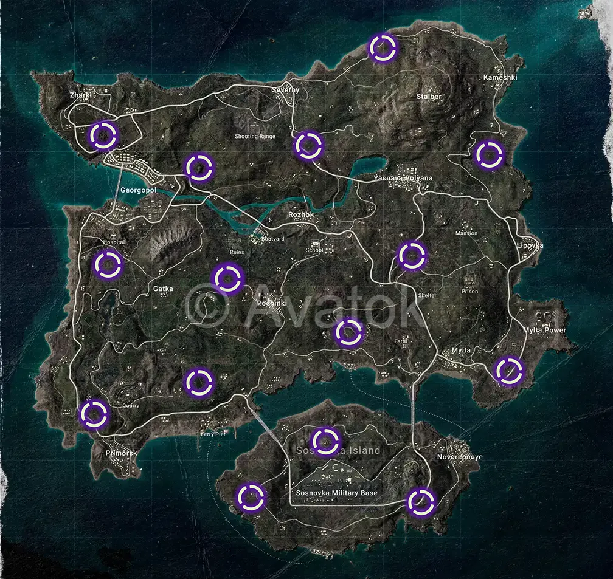

MAP 01 / 06
Karte vergrößern ↗
Erangel Secret Rooms
Fundorte und Beispielbilder für Schlüssel, Eingang und Loot.
Datenstand 2025: Markierte Secret-Room-Fundorte auf sechs PUBG-Karten – schnell finden, besser looten, cleverer spielen.
Datenstand: 2025

FEATURED MAP ERANGEL ↗Direkt zu den eingezeichneten Geheimräumen deiner Lieblingskarte.
Wähle eine PUBG-Karte aus der Übersicht.
Die violetten Symbole zeigen die markierten Fundorte auf der Karte.
Nutze die Beispielbilder, um Schlüssel, Eingänge und Loot besser zu erkennen, sofern vorhanden.
Fundorte und Beispielbilder für Schlüssel, Eingang und Loot.
Geheimraum-Fundorte sowie Bilder von Schlüssel, Eingang, Loot und einem Secret Spot.
Die markierten Fundorte auf Taego im Überblick.
Für diese Karte wurden keine zusätzlichen Detailbilder bereitgestellt.
Alle auf der bereitgestellten Deston-Karte markierten Positionen.
Für diese Karte wurden keine zusätzlichen Detailbilder bereitgestellt.
Die eingezeichneten Fundorte auf der kompakten Paramo-Karte.
Für diese Karte wurden keine zusätzlichen Detailbilder bereitgestellt.
Übersicht der markierten Geheimraum-Positionen auf Karakin.
Für diese Karte wurden keine zusätzlichen Detailbilder bereitgestellt.